A stock transfer is a transfer of stock between warehouses/stores with the same item. More precisely SKUs with shortages are saved from an OoS situation with deliveries of SKUs with excess quantities.
This delivery is called a stock transfer order and is carried out by a stock transfer supplier.
In order to determine whether a stock transfer makes sense, the quantities that can be accepted and delivered are also calculated for both warehouses/SKUs.+
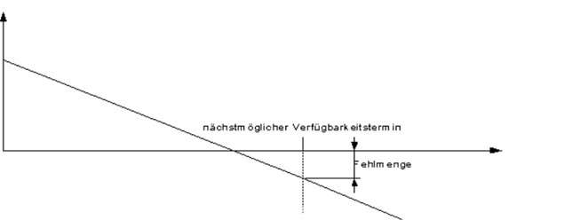
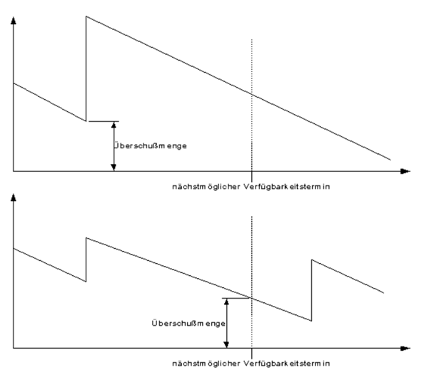
If this calculation reveals that the quantity accepted or delivered is not suitable, because, for example, the excess quantity is not sufficient to compensate for the shortfall, the stock transport order is canceled
If several SKUs have a missing quantity, the SKU with the lowest missing quantity is preferred.
If the shortfall is the same, the SKU with the latest availability date is selected.
If a stock transfer is accepted, a reservation is made in the stock transfer SKU.
To enable relocations, adjustments must be made to the LOGOMATE system, for which you must contact your LOGOMATE contact person who will give you further details.
A container optimization determines a cost-effective container combination for a calculated (trigger) quantity and, if necessary, the rounding up of this container optimization. In order for container optimization to be used, the quality criterion in the Compound group must be set to “Container optimization”.
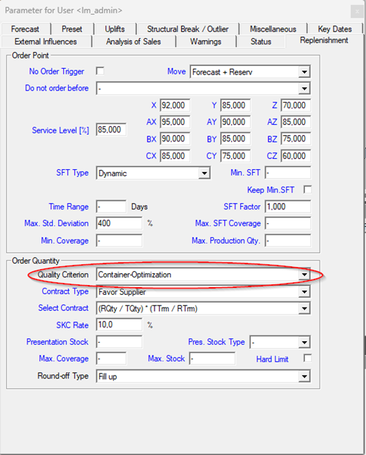
These are also created in the conditions > Conditions -> Units -> Conditions Quantities/ Prices/ Costs.
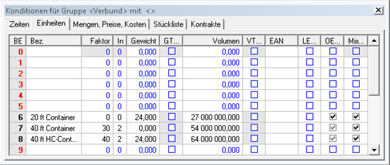
If LCL containers are also to be taken into account, an additional line must be added under “Quantities, prices, costs”:
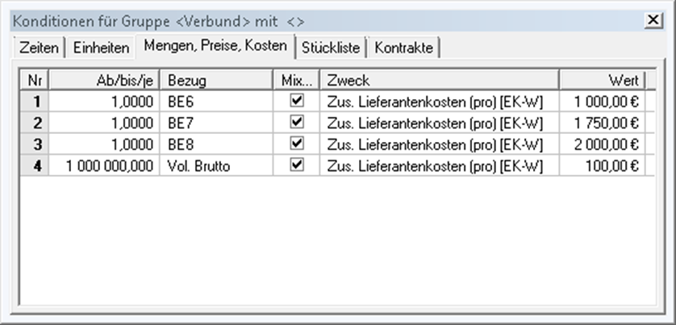
Here, “gross vol.” must be selected as the reference. In addition, as above, the mix flag must be set and either “Additional supplier costs” or “Additional own costs” selected.
After filling, the total order is divided between the individual containers according to the previously determined optimum container combination. This is done as follows:
ABC analysis is used to classify SKUs according to a freely definable key figure, known as the ABC value.
This value is calculated from a combination of relevant fields such as quantity and value—for example, the number of items sold over the last twelve months. The goal is to create an internal list in which all SKUs are sorted in descending order according to their ABC value.
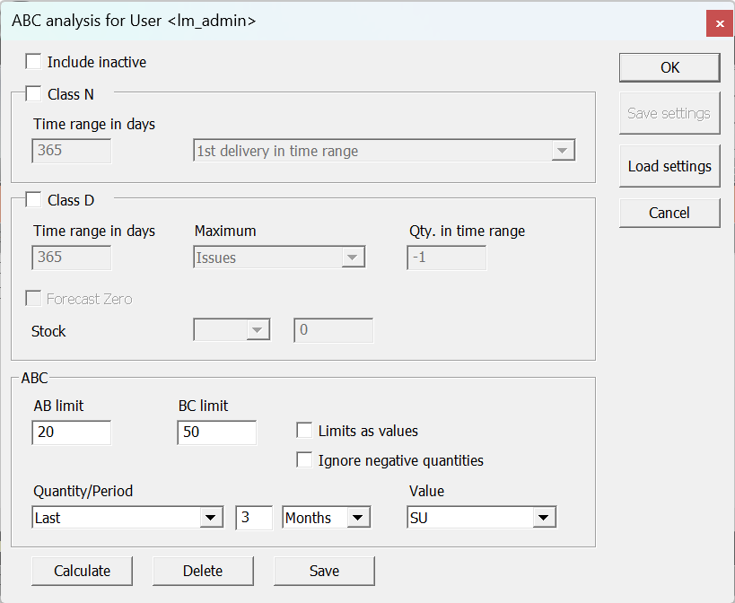
(Window in LOGOMATE)The ABC analysis also includes all inactive SKUs.
The N class includes all SKUs that either had no sales or had sales for the first time (through sale or delivery) in the selected period.
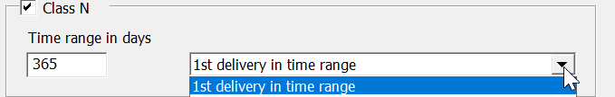
Here, the number of days is specified counting backwards from “today.”
1st delivery in the period
An item is considered an N item if its first delivery took place within the defined period.
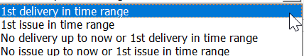
An item is classified as an N item if its first sale took place during the defined period.
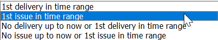
An item is classified as an N item if either no delivery or the first delivery has taken place in the defined period.
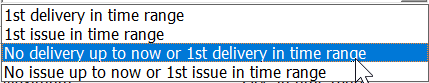
No sales yet or 1st sale in the period
An item is classified as an N item if either no sales have taken place or the first sale has taken place in the defined period.
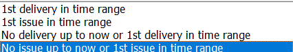
The D class includes all SKUs that were not sold during the defined period or did not reach their specified sales volumes. It serves to specifically identify expired or “dead” items and bundle them into one class.
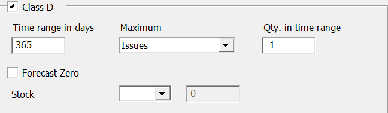
Similar to the N class, this will also be output retroactively from today.
Under „Maximum“ you can select the following options:
The quantity in the period refers to the actual consumption or sales quantity in the base unit of the respective article or storage location.
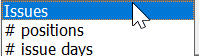
This is the number of consumptions or sales.
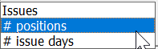
This function is only available if individual items such as supplier data are transferred to LOGOMATE.
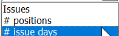
Here you can enter the maximum total sales amount for the specified period.
Activating the 0 forecast for the D class requires a fully automatic zero forecast – the item must be classified as a 0 item.
Using the operators and the quantity requirement for stock, the D class can be further filtered based on the current stock.
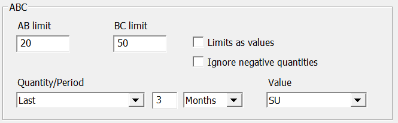
The AB limit is a percentage value that defines the proportion of A items in the total sum of A, B, and C items.
The BC limit is a percentage that indicates the proportion of A and B items in the sum of all A, B, and C items.
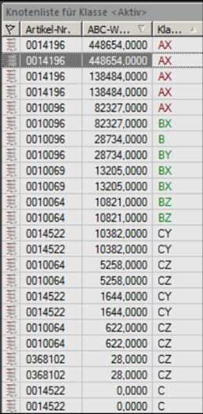
Node list sorted in descending order by ABC value. The option “Limits by value” is not active.
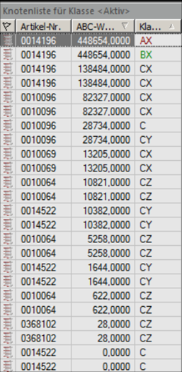
The same list. The Limit by value option is active. The ABC classification has changed.
This option only works with the “Last issues” quantity option. Only when this option is set can the ABC classification change.
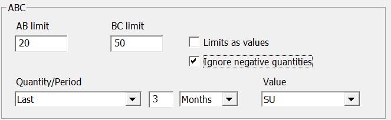
The observation period is specified under ‘Quantity’.
Current forecast value
Forecast value at the time of the next availability date
Average daily forecast
Disposals from the last x days/weeks/months from today
Positions from the last x days/weeks/months starting from today
Disposal days from the last x days/weeks/months starting from today
Attention:The functions „#Pos. Last“ und „#Disposals Last“only work if supplier data is transferred to LOGOMATE.
Values can be inherited within a LOGOMATE cockpit. In general, all values from higher groups are inherited by all groups below them.
When a value has been inherited, the parameter in question is highlighted in color. Depending on the type of inheritance, a different color is displayed:
When the mouse pointer is held over an inherited parameter, a tooltip is displayed showing through which layer the value is inherited.
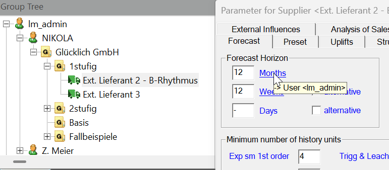
If you press CTRL while clicking on the parameter, you will jump to the layer that inherits the value.
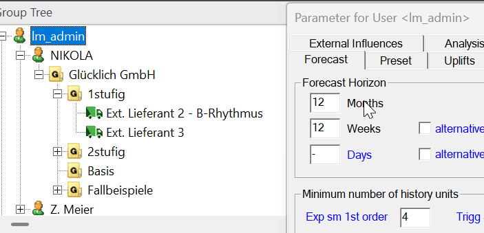
In retail, promotions are generally understood to be sales-promoting measures. In LOGOMATE, however, all planned requirements are referred to as promotions.
LOGOMATE recognizes unusual sales or consumption patterns and can compensate for them with automatic promotions..
Automatic actions are used to correct historical values through OoS adjustment, handling outliers, setting negative historical values to zero, and through key date actions.
Key date promotions are future actions that are created by defining a variable season using key dates and replace the forecast.
Attention! Automatic actions cannot be added manually or removed directly.
Manual promotions are promotions with a known time period and a fixed quantity. For future promotions, a value is required in the Expected Quantity or Relative Expected Quantity field; these quantities are usually positive and are added to the forecast value as an addition (on top). Past promotion require an entry in the Quantity or Rel. Quantity field; the action quantity can be positive or negative and is used to correct the sales value.
Semi-promotion are actions with a fixed time period but an unknown scope. If their time periods lie in the past, they are not included in the forecast.
These parameters determine how the action quantities are calculated, but the parameter only affects semi-actions that lie in the past.
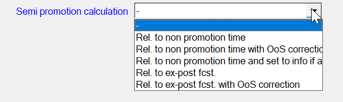
The promotional volumes are calculated based on the ratio of sales during the promotional period to sales in non-promotional periods.
No calculation is performed; if the semi-promotion ends before the first sale, it is converted into an info promotion.
The promotional quantities are calculated based on the ratio between sales and the ex-post forecast.
Historical data is required for this parameter; lost promotional quantities are calculated based on the ratio of sales during the promotional period to sales during non-promotional periods.
Historical data is required for this parameter; lost promotion volumes are calculated based on the ratio between sales and the ex-post forecast.
Info promotion serve only to identify actions and have no effect; however, if the action type is changed from Semi to Info, previously unconsidered periods, including sales and promotions, can be included in the forecast.
Exclusive promotion allows you to specify periods during which outliers are not corrected despite outlier detection being activated; if the promotion type is changed from Outlier to Exclusive, the calculated action quantity remains unchanged.
Example:
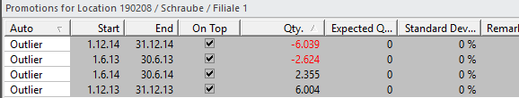
LOGOMATE has identified several outliers in the historical sales data and corrected them accordingly.
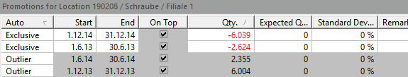
To prevent promotional quantities from being adjusted by automatic promotions in the future, the promotion type for two promotions was changed from Outlier to Exclusive.
In a compound order, SKUs are ordered together to minimize the total costs.
This means that when an item from this compound group is ordered, several other items that would otherwise have to be ordered separately are also ordered at the same time, if possible, which would otherwise increase transport costs unnecessarily.
Therefore, care is taken to ensure that all items in this compound group reach their safety stock level at the same time, if possible.
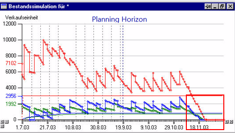
When placing a compound order, attention is paid to the conditions, i.e., these should be as identical as possible, otherwise optimization will take longer and be more difficult to calculate.
In cases like these, it can be advantageous to divide compound groups into smaller compound subgroups.
If compound groups are formed in this way, different conditions can also be used, as calculations are performed recursively. Nevertheless, these should be consistent for each group.
In addition, there must also be a compound supplier for each compound group to deliver the order.
This must also be configured accordingly in the conditions window with the available loading space for the items and the SU & Mix checkboxes.
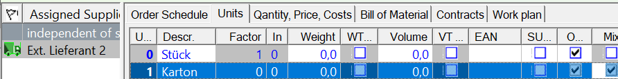
For the item, you must configure in the parameter window whether the item is allowed to trigger orders and the replenishment type.
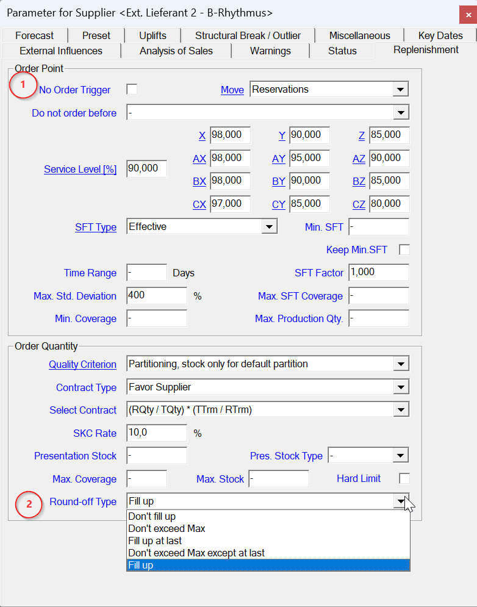
The sporadic method was developed for time series with irregular or low sales.
It is characterized by uncertainties both in the amount of the forecast values and in their timing.
The standard deviation of the forecast value represents the “vertical uncertainty,” while the standard deviation of the duration describes the “horizontal uncertainty.”
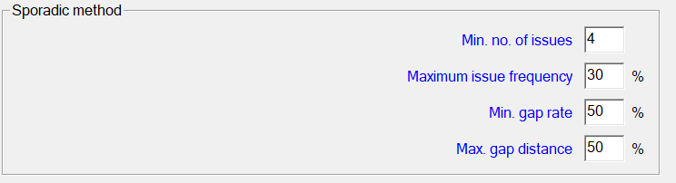
Required number of historical values (excluding zero values)
Maximum permissible proportion of departures in all
historical values = proportion of non-zero values in %
Example: Three departures, ten historical values (including zero values) => departure frequency = 30%
Required minimum proportion of gaps between departures; any period greater than zero between two departures is counted as a gap. Example: Five gaps between ten departures => Gap ratio = 50%
Maximum permitted standard deviation of the time interval – in other words: Gaps that are too large are not permitted.
If LOGOMATE detects unusual issues in the history, it attempts to correct them. If this happens frequently in the same year/month/week period with a similar deviation of X%, a season is recognized. This also affects the forecast, as this “deviation” is then used in further calculations.
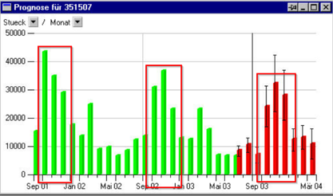
If you want to adjust the season detection, you can do so in the forecast window under the parameters.
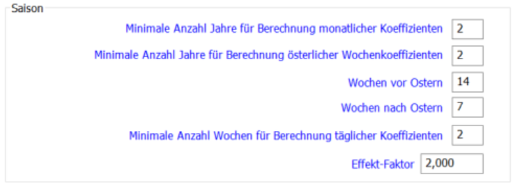
There you can specify how many periods are necessary for a season to be recognized, as well as the effect factor at which a season may be recognized.
It is also possible to transfer a season from one SKU to another.
To do this, enter the SKU from which the season is to be transferred in the preset window of the parameters, under the parameter “Use seasonality from”.
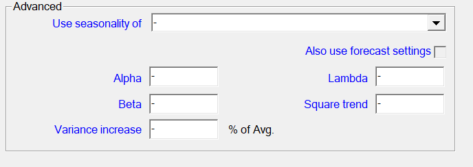
If the SKU already has a season without this option, the transferred season will be ignored (this will also be displayed as a forecast warning).
Key dates are used for variable seasons.
These are manually created seasons that are entered in the window of the same name under Parameters.
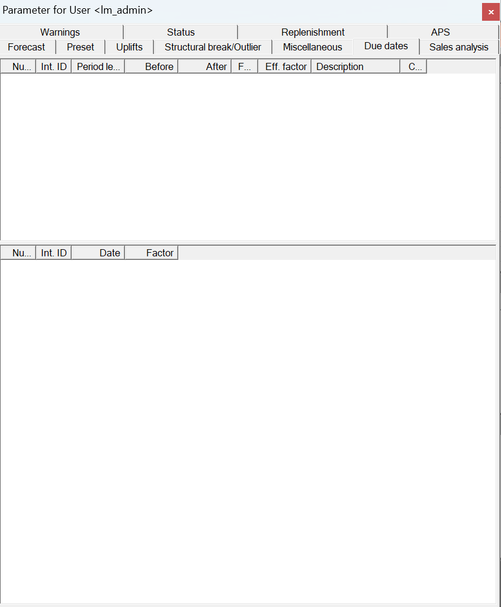
The individual events can be set up in the upper block. The length, effect factor, and description are entered there.
The affected days are displayed in the lower block. At least two key dates must be specified there (one in the past and one in the future) to calculate a season.
If everything has been entered correctly, a key date action is generated for the specified dates.
Without season detection/key date action:
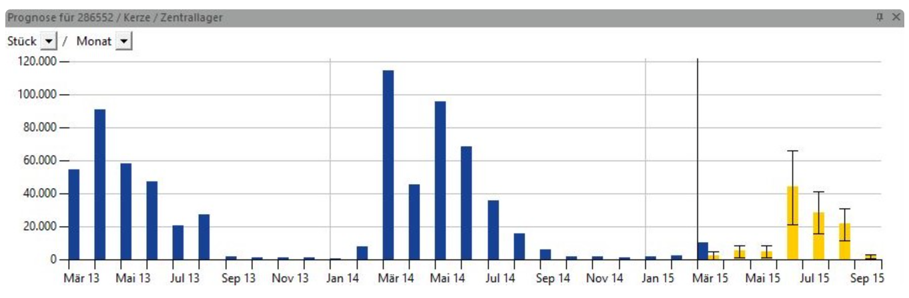
With season recognition/key date promotion:
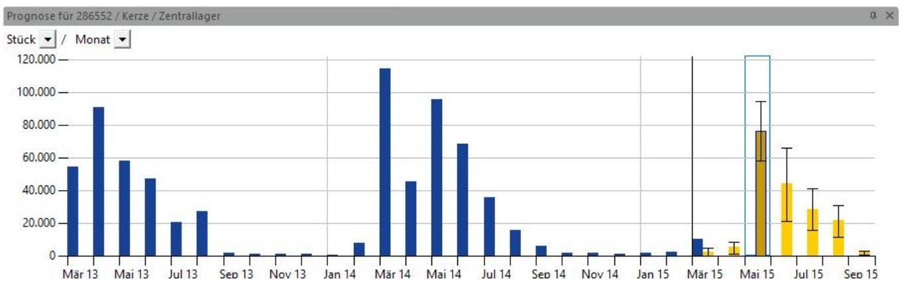